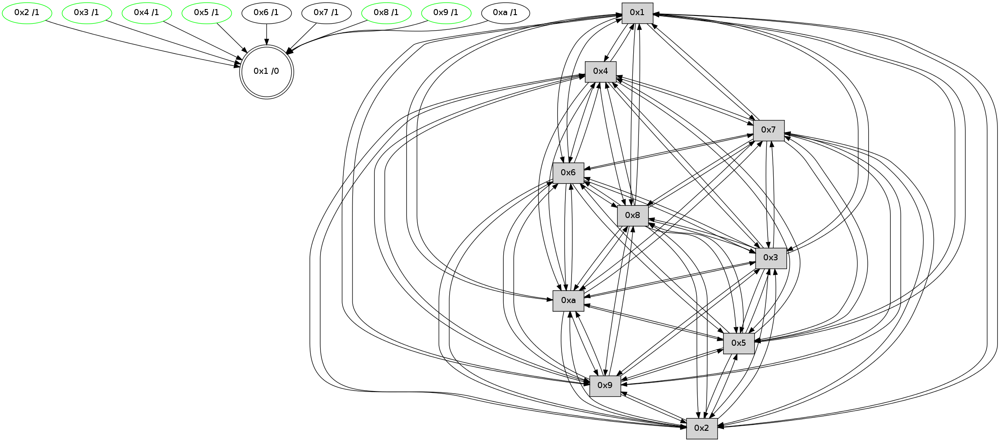

>> << IDX [start] -100 -25 -5 +0 +5 +25 +100 [490.646052122]
 Previous packets
----------------------------------------------------------------------
485.129131 beacon01(faad) #0 coord=01,02,03,04,05,06,07,0a,09,08 cycle=688.0ms assoc
-- color-indic=0 64 f0 48
485.139113 beacon02(faad) #0 coord=01,02,03,04,05,06,07,0a,09,08 cycle=688.0ms assoc 64 63 79
485.149113 beacon03(faad) #0 coord=01,02,03,04,05,06,07,0a,09,08 cycle=688.0ms assoc 64 19 34
485.159114 beacon04(faad) #0 coord=01,02,03,04,05,06,07,0a,09,08 cycle=688.0ms assoc 64 6e de
485.169114 beacon05(faad) #0 coord=01,02,03,04,05,06,07,0a,09,08 cycle=688.0ms assoc 64 14 93
485.179113 beacon06(faad) #0 coord=01,02,03,04,05,06,07,0a,09,08 cycle=688.0ms assoc 64 9a 44
485.189115 beacon07(faad) #0 coord=01,02,03,04,05,06,07,0a,09,08 cycle=688.0ms assoc 64 e0 09
485.199118 beacon0a(faad) #0 coord=01,02,03,04,05,06,07,0a,09,08 cycle=688.0ms assoc 64 91 02
485.209119 beacon09(faad) #0 coord=01,02,03,04,05,06,07,0a,09,08 cycle=688.0ms assoc 64 1f d5
485.219120 beacon08(faad) #0 coord=01,02,03,04,05,06,07,0a,09,08 cycle=688.0ms assoc 64 65 98
485.230306 [Hello(2): seq=310 sym=4,5,7,6,3,9,8,10,1 sysInfo= stat=4:11,0,2,0/5:10,0,3,2/7:12,0,3,0/6:3,0,4,0/3:4,0,3,1/9:14,0,3,1/8:4,0,4,0/10:9,0,2,0/1:4,0,6,0]
485.236961 [Hello(10): seq=245 sym=6,3,2,8,9,5,7,4,1 sysInfo= stat=6:9,0,5,0/3:0,0,4,3/2:12,0,3,3/8:8,0,5,1/9:1,0,2,2/5:8,0,4,2/7:15,0,4,0/4:4,0,1,2/1:11,0,5,0]
485.239648 [Hello(3): seq=313 sym=1,7,6,2,4,8,9,10,5 sysInfo= stat=1:2,0,6,0/7:6,0,2,0/6:3,0,4,0/2:7,0,2,2/4:11,0,1,0/8:3,0,3,0/9:1,0,3,1/10:13,0,2,0/5:11,0,4,1]
485.242719 [Hello(4): seq=313 sym=5,7,6,2,3,9,8,10,1 sysInfo= stat=5:15,0,4,2/7:0,0,4,0/6:7,0,4,0/2:5,0,2,2/3:7,0,5,3/9:2,0,3,2/8:12,0,4,1/10:12,0,1,0/1:6,0,7,0]
485.247956 [Hello(9): seq=256 sym=5,2,3,4,7,6,8,10,1 sysInfo= stat=5:9,0,2,2/2:3,0,3,1/3:11,0,3,2/4:13,0,1,1/7:4,0,4,0/6:14,0,4,0/8:12,0,3,1/10:5,0,1,0/1:0,0,5,0]
----------------------------------------------------------------------
485.917262 beacon01(faad) #0 coord=01,02,03,04,05,06,07,0a,09,08 cycle=688.0ms assoc
-- color-indic=0 64 34 46
485.927245 beacon02(faad) #0 coord=01,02,03,04,05,06,07,0a,09,08 cycle=688.0ms assoc 64 a7 77
485.937245 beacon03(faad) #0 coord=01,02,03,04,05,06,07,0a,09,08 cycle=688.0ms assoc 64 dd 3a
485.947245 beacon04(faad) #0 coord=01,02,03,04,05,06,07,0a,09,08 cycle=688.0ms assoc 64 aa d0
485.957245 beacon05(faad) #0 coord=01,02,03,04,05,06,07,0a,09,08 cycle=688.0ms assoc 64 d0 9d
485.967245 beacon06(faad) #0 coord=01,02,03,04,05,06,07,0a,09,08 cycle=688.0ms assoc 64 5e 4a
485.977248 beacon07(faad) #0 coord=01,02,03,04,05,06,07,0a,09,08 cycle=688.0ms assoc 64 24 07
485.987251 beacon0a(faad) #0 coord=01,02,03,04,05,06,07,0a,09,08 cycle=688.0ms assoc 64 55 0c
485.997252 beacon09(faad) #0 coord=01,02,03,04,05,06,07,0a,09,08 cycle=688.0ms assoc 64 db db
486.007252 beacon08(faad) #0 coord=01,02,03,04,05,06,07,0a,09,08 cycle=688.0ms assoc 64 a1 96
486.018427 [Hello(7): seq=313 sym=2,3,5,6,4,8,9,10,1 sysInfo= stat=2:1,0,4,3/3:12,0,5,3/5:13,0,4,2/6:15,0,5,0/4:10,0,1,1/8:15,0,3,1/9:15,0,3,2/10:12,0,3,0/1:2,0,2,0]
486.026987 [Hello(1): seq=222 sym=4,2,9,5,10,3,8,6,7 sysInfo= stat=4:12,0,3,2/2:7,0,5,3/9:5,0,5,2/5:2,0,4,2/10:7,0,3,0/3:10,0,6,3/8:1,0,6,1/6:10,0,6,0/7:2,0,5,0]
486.030449 [STC(1) #0.8 to-color d=0]
486.034495 [Hello(6): seq=313 sym=2,3,5,4,7,9,8,10,1 sysInfo= stat=2:0,0,4,1/3:0,0,3,1/5:5,0,3,1/4:3,0,2,1/7:15,0,2,0/9:2,0,3,2/8:14,0,3,1/10:12,0,3,0/1:4,0,4,0]
----------------------------------------------------------------------
486.705394 beacon01(faad) #0 coord=01,02,03,04,05,06,07,0a,09,08 cycle=688.0ms assoc
-- color-indic=0 64 88 43
486.715377 beacon02(faad) #0 coord=01,02,03,04,05,06,07,0a,09,08 cycle=688.0ms assoc 64 1b 72
486.725377 beacon03(faad) #0 coord=01,02,03,04,05,06,07,0a,09,08 cycle=688.0ms assoc 64 61 3f
486.735376 beacon04(faad) #0 coord=01,02,03,04,05,06,07,0a,09,08 cycle=688.0ms assoc 64 16 d5
486.745376 beacon05(faad) #0 coord=01,02,03,04,05,06,07,0a,09,08 cycle=688.0ms assoc 64 6c 98
486.755377 beacon06(faad) #0 coord=01,02,03,04,05,06,07,0a,09,08 cycle=688.0ms assoc 64 e2 4f
486.765376 beacon07(faad) #0 coord=01,02,03,04,05,06,07,0a,09,08 cycle=688.0ms assoc 64 98 02
486.775382 beacon0a(faad) #0 coord=01,02,03,04,05,06,07,0a,09,08 cycle=688.0ms assoc 64 e9 09
486.785382 beacon09(faad) #0 coord=01,02,03,04,05,06,07,0a,09,08 cycle=688.0ms assoc 64 67 de
486.795381 beacon08(faad) #0 coord=01,02,03,04,05,06,07,0a,09,08 cycle=688.0ms assoc 64 1d 93
486.806613 [STC(7)->1 #0.8 to-color d=1]
486.808383 [Hello(10): seq=246 sym=6,3,2,8,9,5,7,4,1 sysInfo= stat=6:10,0,5,0/3:1,0,4,3/2:12,0,3,3/8:8,0,5,1/9:2,0,2,2/5:8,0,4,2/7:0,0,4,0/4:5,0,1,2/1:12,0,6,0]
486.811712 [Hello(9): seq=257 sym=5,2,3,4,7,6,8,10,1 sysInfo= stat=5:9,0,2,2/2:3,0,3,1/3:11,0,3,2/4:13,0,1,1/7:5,0,4,0/6:15,0,4,0/8:12,0,3,1/10:5,0,1,0/1:1,0,6,0]
486.814276 [Hello(4): seq=314 sym=5,7,6,2,3,9,8,10,1 sysInfo= stat=5:15,0,4,2/7:1,0,4,0/6:8,0,4,0/2:5,0,2,2/3:7,0,5,3/9:3,0,3,2/8:12,0,4,1/10:12,0,1,0/1:7,0,8,0]
486.817745 [Hello(2): seq=311 sym=4,5,7,6,3,9,8,10,1 sysInfo= stat=4:12,0,2,0/5:10,0,3,2/7:13,0,3,0/6:4,0,4,0/3:5,0,3,1/9:15,0,3,1/8:4,0,4,0/10:10,0,2,0/1:5,0,7,0]
486.821129 [Hello(3): seq=314 sym=1,7,6,2,4,8,9,10,5 sysInfo= stat=1:3,0,7,0/7:7,0,2,0/6:4,0,4,0/2:7,0,2,2/4:12,0,1,0/8:3,0,3,0/9:2,0,3,1/10:13,0,2,0/5:11,0,4,1]
486.823915 [STC(4)->1 #0.8 stable,to-color d=1]
486.825244 [STC(3)->1 #0.8 stable,to-color d=1]
486.826582 [STC(2)->1 #0.8 stable,to-color d=1]
486.827822 [TreeStatus(3)-.->1 #0.8 stable child=1]
486.829211 [STC(10)->1 #0.8 to-color d=1]
486.831185 [Hello(8): seq=257 sym=5,2,3,4,7,6,9,10,1 sysInfo= stat=5:6,0,3,1/2:0,0,3,2/3:14,0,3,3/4:7,0,1,1/7:3,0,4,0/6:11,0,5,0/9:8,0,3,1/10:4,0,1,0/1:1,0,7,0]
486.835415 [STC(9)->1 #0.8 stable,to-color d=1]
486.838366 [TreeStatus(2)-.->1 #0.8 stable child=1]
486.839886 [TreeStatus(4)-.->1 #0.8 stable child=1]
486.845163 [STC(8)->1 #0.8 stable,to-color d=1]
486.847759 [TreeStatus(8)-.->1 #0.8 stable child=1]
486.849878 [Hello(5): seq=314 sym=7,6,4,3,1,9,8,10,2 sysInfo= stat=7:15,0,3,0/6:4,0,5,0/4:5,0,1,1/3:0,0,0,0/1:8,0,6,0/9:5,0,3,1/8:10,0,3,0/10:1,0,0,0/2:5,0,1,1]
486.853673 [STC(5)->1 #0.8 stable,to-color d=1]
486.855960 [TreeStatus(5)-.->1 #0.8 stable child=1]
----------------------------------------------------------------------
487.493526 beacon01(faad) #0 coord=01,02,03,04,05,06,07,0a,09,08 cycle=688.0ms assoc
-- color-indic=0 64 bc 5b
487.503507 beacon02(faad) #0 coord=01,02,03,04,05,06,07,0a,09,08 cycle=688.0ms assoc 64 2f 6a
487.513508 beacon03(faad) #0 coord=01,02,03,04,05,06,07,0a,09,08 cycle=688.0ms assoc 64 55 27
487.523510 beacon04(faad) #0 coord=01,02,03,04,05,06,07,0a,09,08 cycle=688.0ms assoc 64 22 cd
487.533509 beacon05(faad) #0 coord=01,02,03,04,05,06,07,0a,09,08 cycle=688.0ms assoc 64 58 80
487.543509 beacon06(faad) #0 coord=01,02,03,04,05,06,07,0a,09,08 cycle=688.0ms assoc 64 d6 57
487.553509 beacon07(faad) #0 coord=01,02,03,04,05,06,07,0a,09,08 cycle=688.0ms assoc 64 ac 1a
487.563514 beacon0a(faad) #0 coord=01,02,03,04,05,06,07,0a,09,08 cycle=688.0ms assoc 64 dd 11
487.573514 beacon09(faad) #0 coord=01,02,03,04,05,06,07,0a,09,08 cycle=688.0ms assoc 64 53 c6
487.583514 beacon08(faad) #0 coord=01,02,03,04,05,06,07,0a,09,08 cycle=688.0ms assoc 64 29 8b
487.594654 [Hello(6): seq=314 sym=2,3,5,4,7,9,8,10,1 sysInfo= stat=2:1,0,5,2/3:1,0,4,2/5:6,0,4,2/4:4,0,3,2/7:15,0,3,0/9:3,0,4,2/8:15,0,4,2/10:13,0,4,0/1:4,0,4,0]
487.598979 [Hello(7): seq=314 sym=2,3,5,6,4,8,9,10,1 sysInfo= stat=2:2,0,5,4/3:13,0,6,4/5:14,0,5,3/6:0,0,5,0/4:11,0,2,2/8:0,0,4,2/9:0,0,4,2/10:13,0,4,0/1:3,0,3,0]
487.603629 [Hello(1): seq=223 sym=4,2,9,5,10,3,8,6,7 sysInfo= stat=4:13,0,4,3/2:8,0,6,4/9:6,0,6,2/5:3,0,5,3/10:8,0,4,0/3:11,0,7,4/8:2,0,7,2/6:11,0,6,0/7:2,0,6,0]
----------------------------------------------------------------------
488.281658 beacon01(faad) #0 coord=01,02,03,04,05,06,07,0a,09,08 cycle=688.0ms assoc
-- color-indic=0 64 00 5e
488.291641 beacon02(faad) #0 coord=01,02,03,04,05,06,07,0a,09,08 cycle=688.0ms assoc 64 93 6f
488.301640 beacon03(faad) #0 coord=01,02,03,04,05,06,07,0a,09,08 cycle=688.0ms assoc 64 e9 22
488.311640 beacon04(faad) #0 coord=01,02,03,04,05,06,07,0a,09,08 cycle=688.0ms assoc 64 9e c8
488.321640 beacon05(faad) #0 coord=01,02,03,04,05,06,07,0a,09,08 cycle=688.0ms assoc 64 e4 85
488.331640 beacon06(faad) #0 coord=01,02,03,04,05,06,07,0a,09,08 cycle=688.0ms assoc 64 6a 52
488.341642 beacon07(faad) #0 coord=01,02,03,04,05,06,07,0a,09,08 cycle=688.0ms assoc 64 10 1f
488.351648 beacon0a(faad) #0 coord=01,02,03,04,05,06,07,0a,09,08 cycle=688.0ms assoc 64 61 14
488.361648 beacon09(faad) #0 coord=01,02,03,04,05,06,07,0a,09,08 cycle=688.0ms assoc 64 ef c3
488.371646 beacon08(faad) #0 coord=01,02,03,04,05,06,07,0a,09,08 cycle=688.0ms assoc 64 95 8e
488.383442 [Hello(5): seq=315 sym=7,6,4,3,1,9,8,10,2 sysInfo= stat=7:0,0,4,0/6:5,0,5,0/4:5,0,1,1/3:0,0,0,0/1:9,0,6,0/9:5,0,3,1/8:10,0,3,0/10:1,0,0,0/2:5,0,1,1]
488.385962 [Hello(4): seq=315 sym=5,7,6,2,3,9,8,10,1 sysInfo= stat=5:0,0,5,3/7:2,0,5,0/6:9,0,4,0/2:5,0,2,2/3:7,0,5,3/9:3,0,3,2/8:12,0,5,2/10:12,0,1,0/1:8,0,8,0]
488.388393 [Hello(8): seq=258 sym=5,2,3,4,7,6,9,10,1 sysInfo= stat=5:7,0,4,2/2:0,0,3,2/3:14,0,3,3/4:7,0,1,1/7:4,0,5,0/6:12,0,5,0/9:8,0,3,1/10:4,0,1,0/1:2,0,7,0]
488.393967 [Hello(9): seq=258 sym=5,2,3,4,7,6,8,10,1 sysInfo= stat=5:10,0,3,3/2:3,0,3,1/3:11,0,3,2/4:13,0,1,2/7:6,0,5,0/6:0,0,4,0/8:12,0,4,2/10:5,0,1,0/1:2,0,6,0]
488.396982 [Hello(10): seq=247 sym=6,3,2,8,9,5,7,4,1 sysInfo= stat=6:11,0,5,0/3:1,0,4,3/2:12,0,3,4/8:9,0,6,2/9:2,0,3,2/5:9,0,5,3/7:1,0,4,0/4:5,0,1,3/1:13,0,6,0]
488.401587 [Hello(3): seq=315 sym=1,7,6,2,4,8,9,10,5 sysInfo= stat=1:4,0,7,0/7:8,0,3,0/6:5,0,4,0/2:7,0,2,3/4:12,0,1,1/8:4,0,4,1/9:2,0,4,1/10:13,0,3,0/5:12,0,5,2]
488.412477 [Hello(2): seq=312 sym=4,5,7,6,3,9,8,10,1 sysInfo= stat=4:12,0,2,1/5:11,0,4,3/7:14,0,4,0/6:5,0,4,0/3:5,0,3,2/9:15,0,3,1/8:4,0,5,1/10:10,0,2,0/1:6,0,7,0]
----------------------------------------------------------------------
489.069788 beacon01(faad) #0 coord=01,02,03,04,05,06,07,0a,09,08 cycle=688.0ms assoc
-- color-indic=0 64 c4 50
489.079770 beacon02(faad) #0 coord=01,02,03,04,05,06,07,0a,09,08 cycle=688.0ms assoc 64 57 61
489.089772 beacon03(faad) #0 coord=01,02,03,04,05,06,07,0a,09,08 cycle=688.0ms assoc 64 2d 2c
489.099772 beacon04(faad) #0 coord=01,02,03,04,05,06,07,0a,09,08 cycle=688.0ms assoc 64 5a c6
489.109772 beacon05(faad) #0 coord=01,02,03,04,05,06,07,0a,09,08 cycle=688.0ms assoc 64 20 8b
489.119771 beacon06(faad) #0 coord=01,02,03,04,05,06,07,0a,09,08 cycle=688.0ms assoc 64 ae 5c
489.129772 beacon07(faad) #0 coord=01,02,03,04,05,06,07,0a,09,08 cycle=688.0ms assoc 64 d4 11
489.139777 beacon0a(faad) #0 coord=01,02,03,04,05,06,07,0a,09,08 cycle=688.0ms assoc 64 a5 1a
489.149776 beacon09(faad) #0 coord=01,02,03,04,05,06,07,0a,09,08 cycle=688.0ms assoc 64 2b cd
489.159776 beacon08(faad) #0 coord=01,02,03,04,05,06,07,0a,09,08 cycle=688.0ms assoc 64 51 80
489.170955 [Hello(6): seq=315 sym=2,3,5,4,7,9,8,10,1 sysInfo= stat=2:2,0,5,2/3:2,0,4,2/5:7,0,4,2/4:5,0,3,2/7:0,0,3,0/9:4,0,4,2/8:15,0,4,2/10:14,0,4,0/1:5,0,4,0]
489.181767 [Hello(7): seq=315 sym=2,3,5,6,4,8,9,10,1 sysInfo= stat=2:3,0,5,4/3:14,0,6,4/5:15,0,5,3/6:0,0,5,0/4:12,0,2,2/8:0,0,4,2/9:1,0,4,2/10:14,0,4,0/1:4,0,3,0]
----------------------------------------------------------------------
489.857920 beacon01(faad) #0 coord=01,02,03,04,05,06,07,0a,09,08 cycle=688.0ms assoc
-- color-indic=0 64 78 55
489.867903 beacon02(faad) #0 coord=01,02,03,04,05,06,07,0a,09,08 cycle=688.0ms assoc 64 eb 64
489.877903 beacon03(faad) #0 coord=01,02,03,04,05,06,07,0a,09,08 cycle=688.0ms assoc 64 91 29
489.887901 beacon04(faad) #0 coord=01,02,03,04,05,06,07,0a,09,08 cycle=688.0ms assoc 64 e6 c3
489.897903 beacon05(faad) #0 coord=01,02,03,04,05,06,07,0a,09,08 cycle=688.0ms assoc 64 9c 8e
489.907901 beacon06(faad) #0 coord=01,02,03,04,05,06,07,0a,09,08 cycle=688.0ms assoc 64 12 59
489.917902 beacon07(faad) #0 coord=01,02,03,04,05,06,07,0a,09,08 cycle=688.0ms assoc 64 68 14
489.927907 beacon0a(faad) #0 coord=01,02,03,04,05,06,07,0a,09,08 cycle=688.0ms assoc 64 19 1f
489.937908 beacon09(faad) #0 coord=01,02,03,04,05,06,07,0a,09,08 cycle=688.0ms assoc 64 97 c8
489.947908 beacon08(faad) #0 coord=01,02,03,04,05,06,07,0a,09,08 cycle=688.0ms assoc 64 ed 85
489.959548 [STC(1) #0.9 to-color d=0]
489.960667 [Hello(4): seq=316 sym=5,7,6,2,3,9,8,10,1 sysInfo= stat=5:0,0,5,3/7:3,0,5,0/6:10,0,4,0/2:6,0,2,2/3:8,0,5,3/9:4,0,3,2/8:13,0,5,2/10:13,0,1,0/1:8,0,8,0]
489.963365 [Hello(5): seq=316 sym=7,6,4,3,1,9,8,10,2 sysInfo= stat=7:1,0,4,0/6:6,0,5,0/4:6,0,1,1/3:1,0,0,0/1:9,0,6,0/9:6,0,3,1/8:10,0,3,0/10:2,0,0,0/2:6,0,1,1]
489.966374 [Hello(8): seq=259 sym=5,2,3,4,7,6,9,10,1 sysInfo= stat=5:7,0,4,2/2:1,0,3,2/3:15,0,3,3/4:7,0,1,1/7:5,0,5,0/6:13,0,5,0/9:9,0,3,1/10:5,0,1,0/1:2,0,7,0]
489.969915 [Hello(9): seq=259 sym=5,2,3,4,7,6,8,10,1 sysInfo= stat=5:10,0,3,3/2:4,0,3,1/3:12,0,3,2/4:13,0,1,2/7:7,0,5,0/6:1,0,4,0/8:12,0,4,2/10:6,0,1,0/1:2,0,6,0]
489.972597 [Hello(3): seq=316 sym=1,7,6,2,4,8,9,10,5 sysInfo= stat=1:5,0,7,0/7:9,0,3,0/6:5,0,4,0/2:8,0,2,3/4:12,0,1,1/8:4,0,4,1/9:2,0,4,1/10:13,0,3,0/5:12,0,5,2]
489.975471 [Hello(2): seq=313 sym=4,5,7,6,3,9,8,10,1 sysInfo= stat=4:12,0,2,1/5:11,0,4,3/7:15,0,4,0/6:6,0,4,0/3:5,0,3,2/9:15,0,3,1/8:4,0,5,1/10:10,0,2,0/1:6,0,7,0]
489.982519 [Hello(10): seq=248 sym=6,3,2,8,9,5,7,4,1 sysInfo= stat=6:12,0,5,0/3:2,0,4,3/2:13,0,3,4/8:9,0,6,2/9:2,0,3,2/5:9,0,5,3/7:2,0,4,0/4:5,0,1,3/1:13,0,6,0]